Where's Waldo: Scene 02 - On the Beach
1987 First Edition
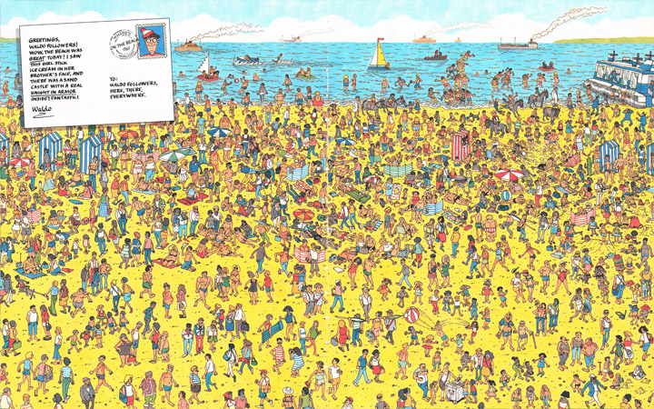
Gameplay
Waldo and his lost snorkel were the original things to find on the beach.
1991 Magnificent Poster Book
Gameplay
Wenda, Woof, Waldo's key, and 6 Waldo Watchers were added when this scene was included in
The Magnificent Poster Book.
Cosmetic Changes
All of the waves and ripples in the water were redrawn to be slightly more bold:

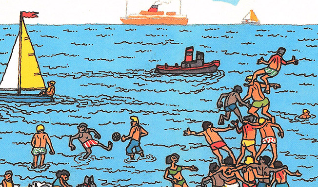
A random object was added near the bags:
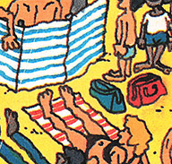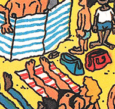
1993 Mini Edition
Gameplay
Waldo was redrawn with the new character design, and an extra pair of legs were added to further obscure him:
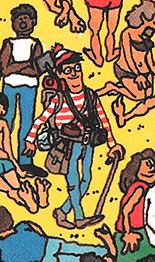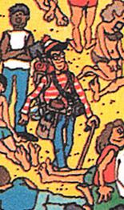
1997 Special Edition
Gameplay
Wizard Whitebeard, Odlaw, and the mystery character were added, along with the camera, bone, scroll, and binoculars. Waldo, Woof, and the snorkel were moved to new locations.
The Waldo Watchers were redrawn, but none were added.
Early Censorship
This edition introduced the most infamous example of censorship in the Waldo series. The bare-chested woman was covered with a bikini:
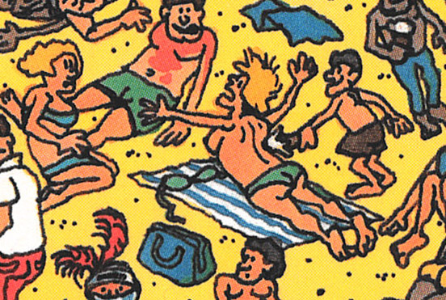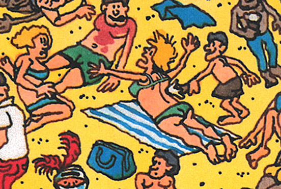
2012 Deluxe Edition
The Rise of Political Correctness
The fat woman crushing a child was replaced with a man:
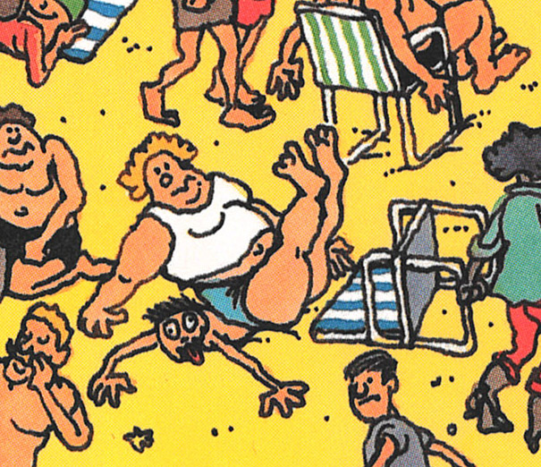

This Coppertone moment was removed. The dog is no longer biting the kid:
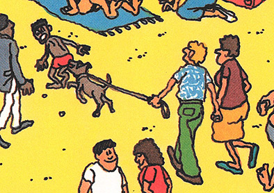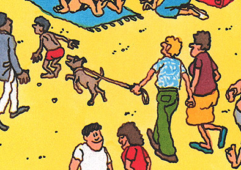
This guy is no longer getting poked in the eye:
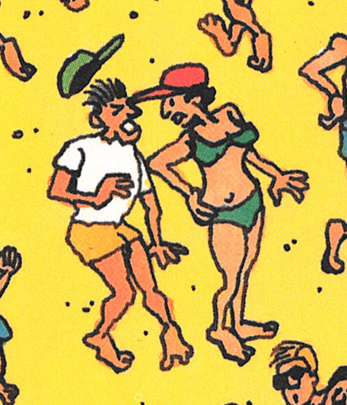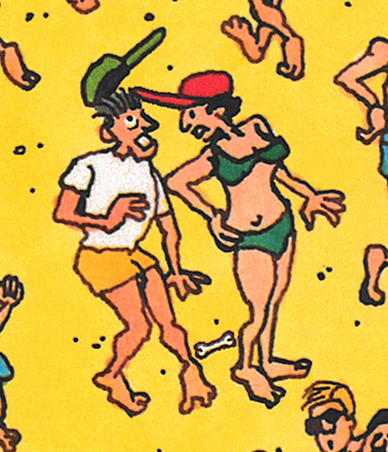
This woman's cleavage was down-sized:
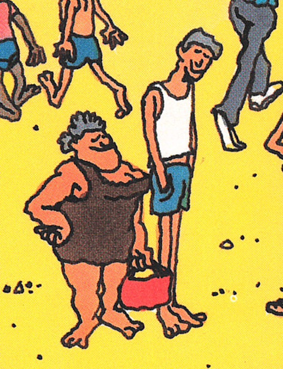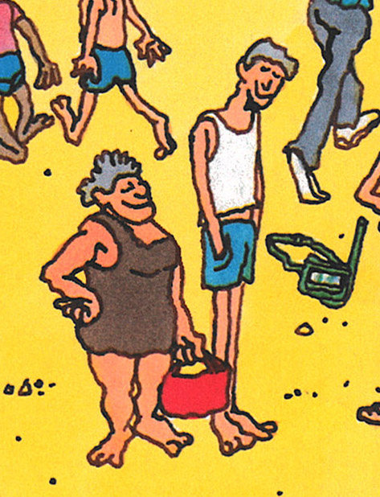
This woman's bikini bottoms are covering slightly more, and her hand was moved to be less suggestive:
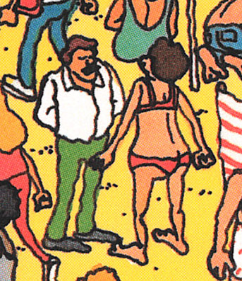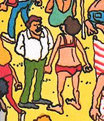
Racial Changes
The Arab kid building pyramids was replaced with a white kid, ruining the whole gag:
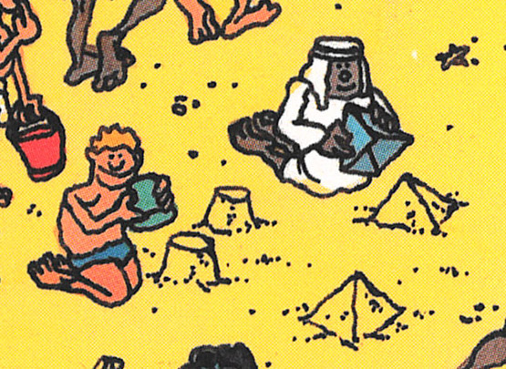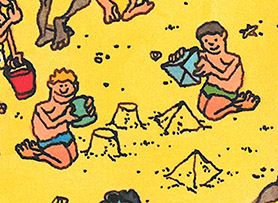
The races of these kids were swapped. The mischievous kids are now white instead of black:
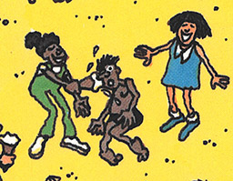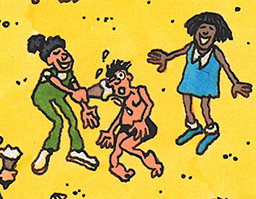
The faces of two black people were redrawn, and an angry white woman was added alongside the angry black woman:
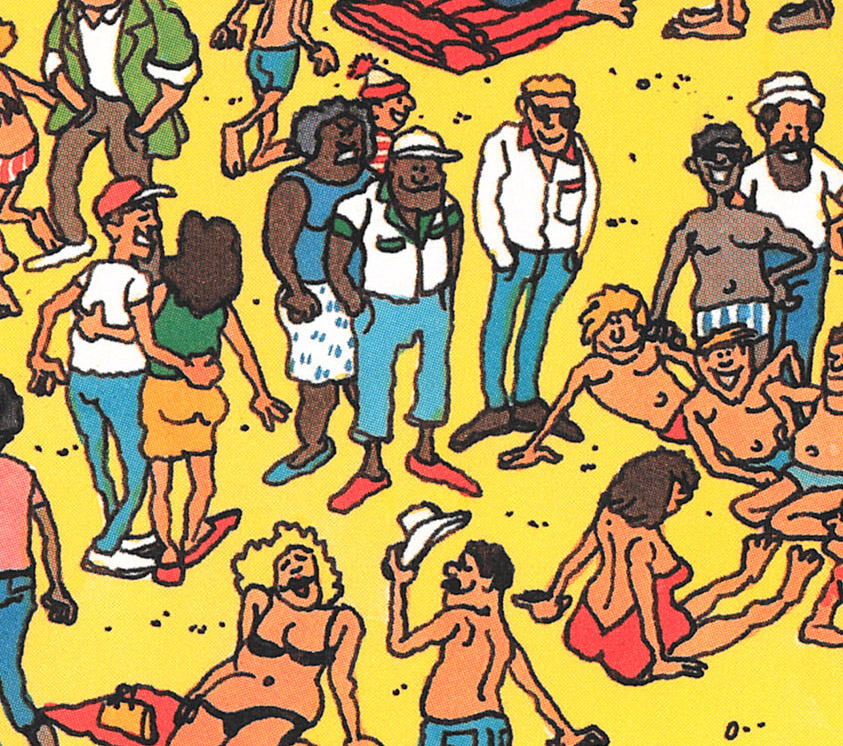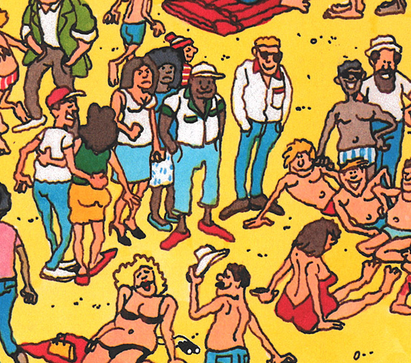
Drinking and Smoking
All drinking and smoking was removed from the scene:
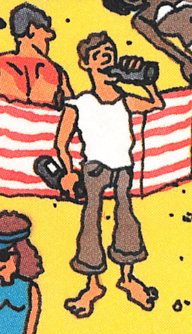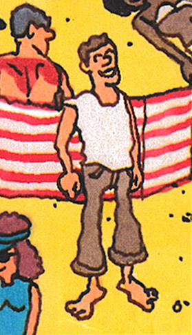
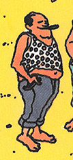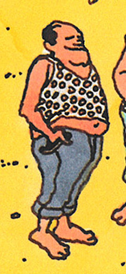
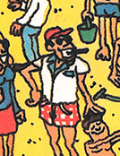
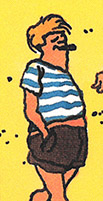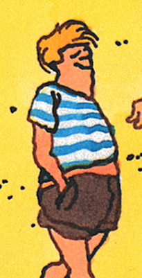
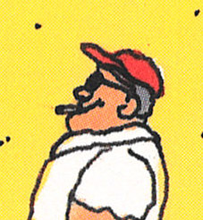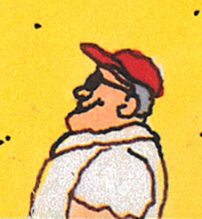
Cosmetic Changes
The rolled-up umbrella has an extra blue stripe:
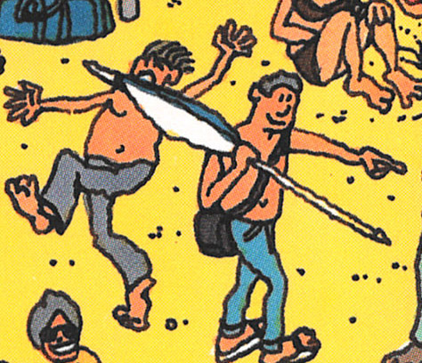

Shadows around this woman's face were removed:
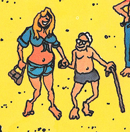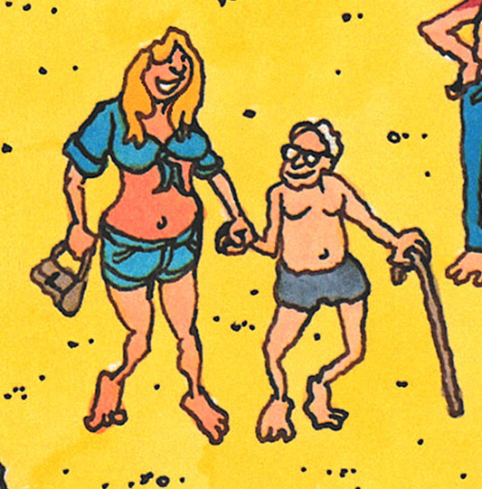
Postcard
The postcard text has been tweaked over the years:
1987
Greetings, Waldo followers! Wow, the beach was great today! I saw this girl stick ice cream in her brother's face, and there was a sand castle with a real knight in armor inside! Fantastic!
1993
Greetings, Waldo followers! Wow, the beach was great today! I saw this girl stick an ice cream in her brother's face, and there was a sand castle with a real knight in armour inside! Fantastic!
2012
Greetings, Waldo-followers! Wow, the beach was great today! All around me I saw stripes on towels, clothes, umbrellas, and beach huts. There was a sand castle with a real knight in armor inside! Fantastic!
Under the Postcard
By the early 90s additional artwork had been added underneath the postcard, so the scene could be used
outside the context of the book (posters, puzzles, etc.):
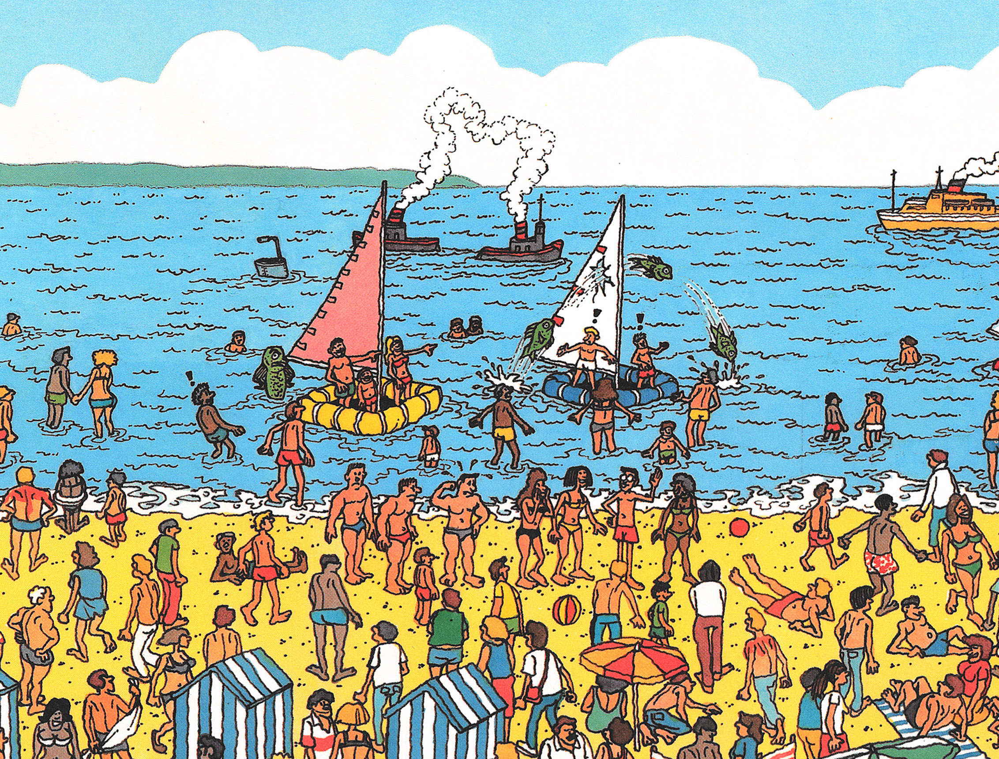
Starting the in the 1993 edition, you can see some of the new artwork peeking out of the bottom of the postcard. Traces of 4 new characters
and a beach ball are present. The woman on the bottom-left had her bare feet covered with shoes:
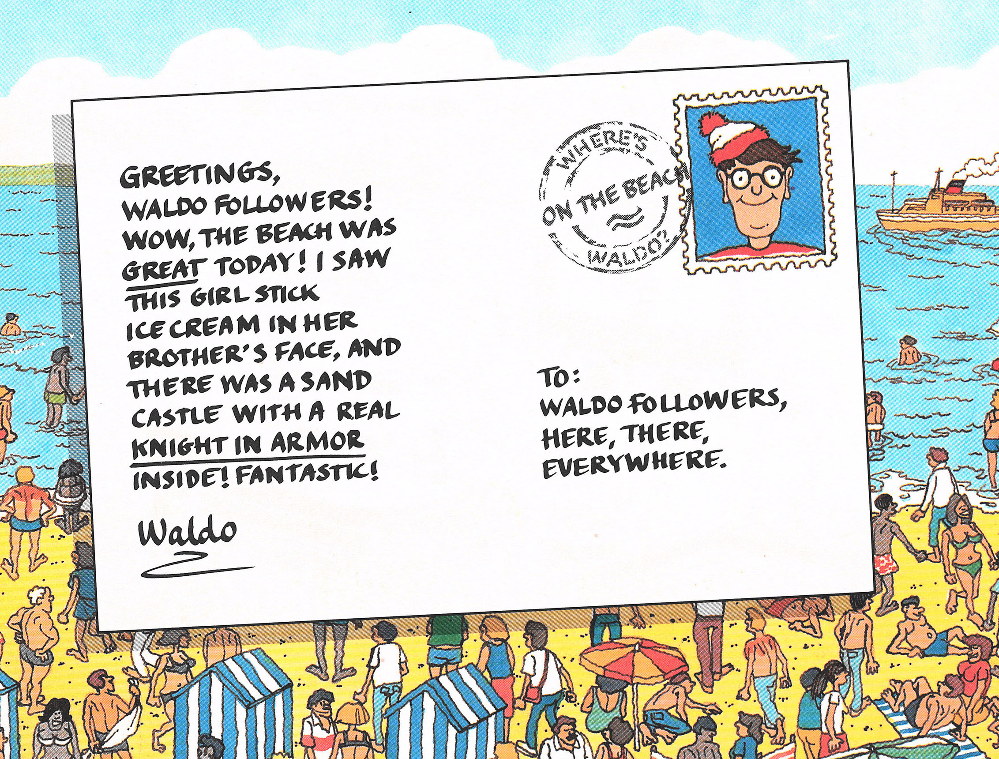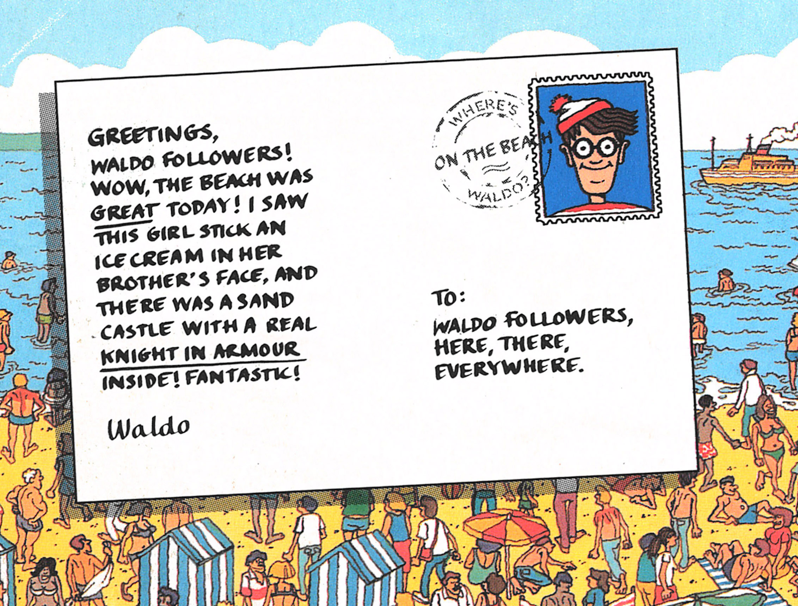